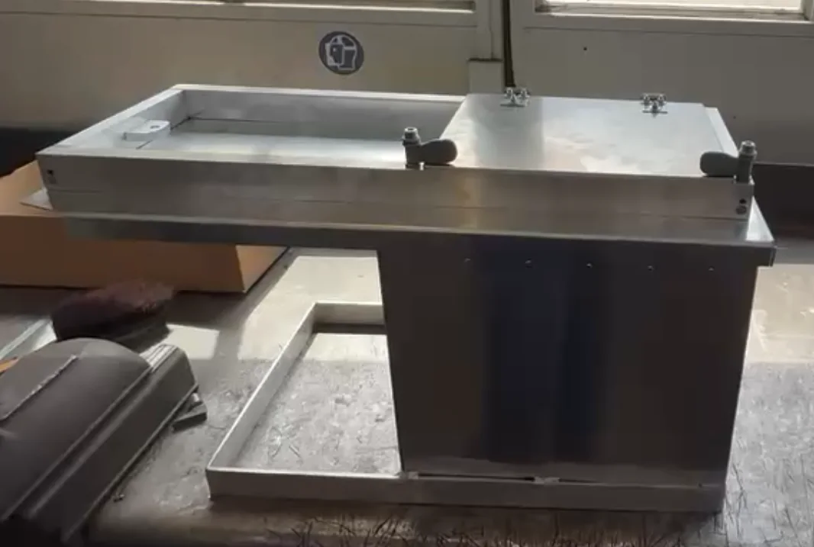
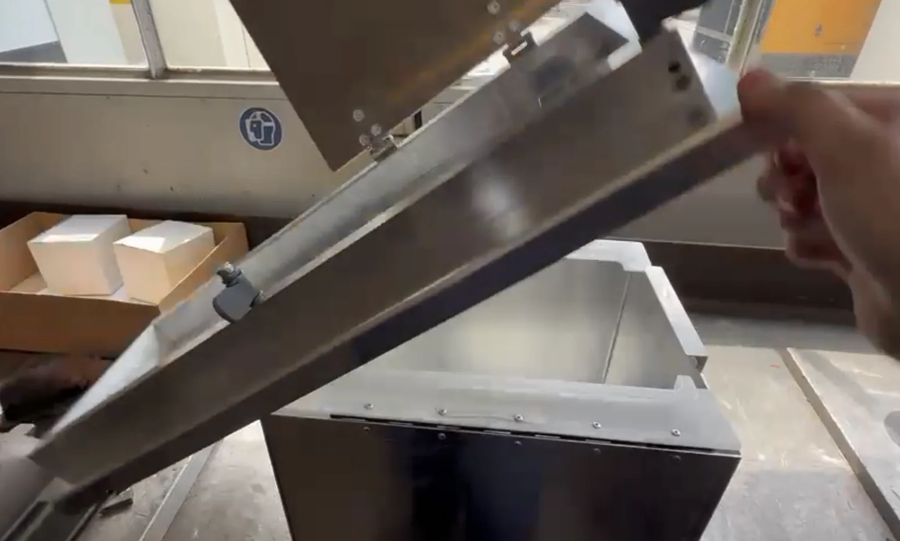
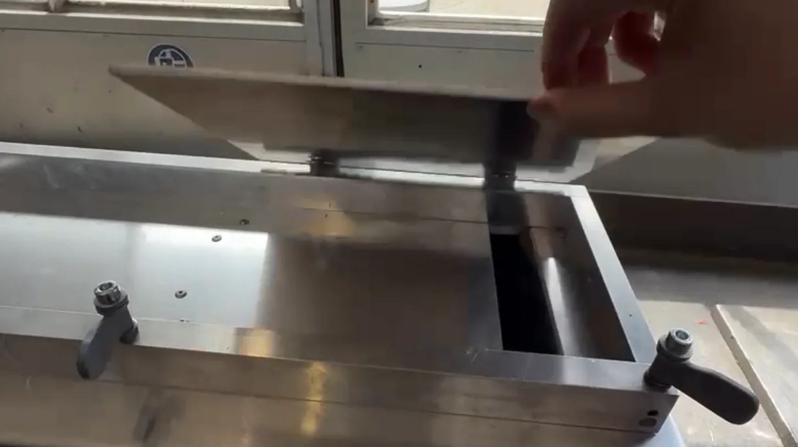
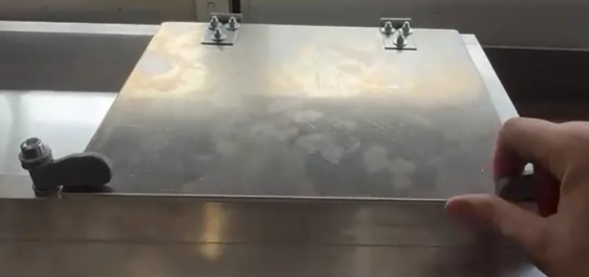
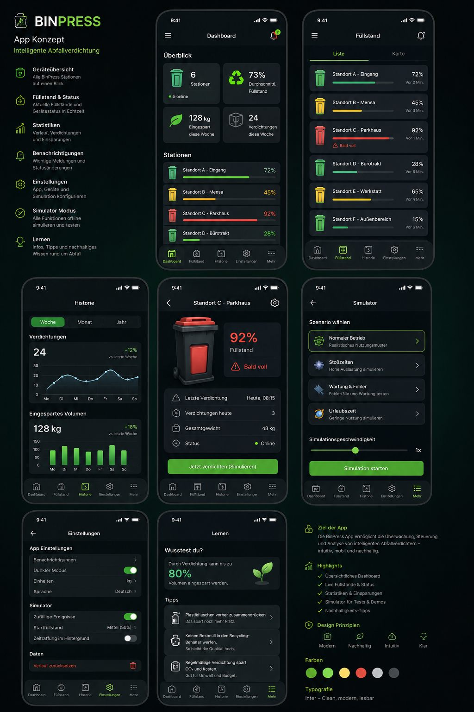

Volumen besser nutzen
Angestrebt werden etwa 40–50 % Volumenreduktion. Der reale Wert wird im standardisierten Prototypentest überprüft.
Haushalts-Abfallverdichter · Prototyp 2026
BinPress verdichtet leichte, trockene Haushaltsabfälle elektrisch direkt im Abfallbehälter. Ziel ist, das vorhandene Sackvolumen besser zu nutzen — ohne den Abfall von Hand herunterzudrücken.

Das Problem
Leichte Verpackungen, Folien, Papier und Karton beanspruchen schnell viel Volumen. Häufig wird der Sack gewechselt oder von Hand zusammengedrückt — umständlich und potenziell unhygienisch.
BinPress setzt deshalb nicht primär beim Gewicht an, sondern bei der besseren Nutzung des vorhandenen Sackvolumens.
Angestrebt werden etwa 40–50 % Volumenreduktion. Der reale Wert wird im standardisierten Prototypentest überprüft.
Verdichten auf Knopfdruck statt mit der Hand nachzudrücken. Der unmittelbare Nutzen steht vor einer reinen Sparargumentation.
Ein möglichst flexibler Adapter soll die Integration in bestehende, geeignete Haushalts-Abfallbehälter ermöglichen.
Vorher / Nachher
Die Marketingstrategie setzt bewusst auf visuelle Demonstrationen. Diese Animation zeigt den angestrebten Effekt schematisch — noch keinen gemessenen Versuchswert.
Für wen?
Im Marketingkonzept stehen drei Haushaltssegmente besonders im Fokus.
Wenig Lust auf unnötige Sackwechsel, hoher Wert auf Komfort und eine saubere Lösung.
Mehrere Personen, wechselnder Abfallmix und ein gemeinsamer Behälter: einfache Bedienung zählt.
Höherer Sackverbrauch macht bessere Platzausnutzung und weniger häufiges Wechseln besonders interessant.
So funktioniert's
Das Konzept arbeitet mit einem horizontalen, elektrischen Pressmechanismus, geführt über Gewindespindel und Führungsstreben, mit gekoppeltem Auswurf.
Deckel öffnen, Sack in der vorgesehenen Halterung einsetzen und Gerät wieder schliessen.
Leichten, trockenen Haushaltsabfall einfüllen, Deckel schliessen und mit dem Schieber verriegeln. Ein Sensor prüft die Verriegelung, bevor der Start freigegeben wird.
Die Gewindespindel bewegt die Pressplatte mit rund 3000 N über den 200-mm-Hub; Führungsstreben halten sie stabil. Ein Display zeigt den Zustand laufend an, Motorstrom und Endschalter werden überwacht.
Am Ende des Presswegs fällt der verdichtete Abfall durch einen schmalen Schlitz in den Sack. Danach fährt die Pressplatte zurück in die Ausgangsposition und ist für den nächsten Zyklus bereit.
Der Prototyp
Der Prototyp ist weit fortgeschritten. Gemäss Projektstatus vom 07.08.2026 sind die Einzelteile gefertigt; vollständige Montage, Inbetriebnahme und Tests stehen noch aus.



Making-of
Das vorhandene Projektvideo zeigt einen echten Ausschnitt aus der Konstruktion in Onshape. Es eignet sich als Behind-the-Scenes-Inhalt für Website, Präsentation und Social Media.
Für die spätere Kampagne ist zusätzlich ein kurzes Erklärvideo mit digitalem Zwilling sowie eine reale Vorher-Nachher-Demonstration vorgesehen.

Ausblick · Konzept
Ein früher UI-Entwurf zeigt, wohin sich BinPress entwickeln könnte: eine App, die Füllstand und Verdichtung mehrerer Geräte sichtbar macht. Das ist ein Gestaltungskonzept — nicht Teil des aktuellen Marketingkonzepts, des Prototyps oder einer bestätigten Roadmap.
Als Diskussionsgrundlage für eine mögliche spätere Erweiterung gedacht, nicht als zugesichertes Feature.
Sicherheit
Der aktuelle Sicherheitsansatz sieht mehrere unabhängige Schutzmassnahmen vor. Ihre Funktion muss am fertigen Prototyp geprüft und dokumentiert werden.
Ein Pressvorgang soll nur bei geschlossenem und verriegeltem Zugang möglich sein. Ein Sensor allein gilt nicht als ausreichend — zusätzlich soll der Verriegelungsschieber selbst geprüft werden.
Die Bewegung muss im Fehlerfall jederzeit gestoppt werden können; ein Neustart darf nicht automatisch erfolgen, auch nicht nach einem Stromausfall.
Motorstrom und maximale Fahrzeit sollen Blockaden beziehungsweise zu hohen Widerstand erkennen und den Antrieb rechtzeitig stoppen.
Endschalter und ein zusätzlicher mechanischer Anschlag sollen unzulässige Fahrwege verhindern.
Ein kleines Display zeigt den Betriebszustand laufend an — etwa betriebsbereit, Pressvorgang aktiv, Überlast oder Störung.
230-V-Bereich vollständig abgedeckt, Motor und Steuerung mit 24 V; alle berührbaren Metallteile geerdet.
Der Pressvorgang startet erst, wenn die Steuerung fünf Bedingungen gleichzeitig prüft:
Technische Daten
Auslegungswerte, Anforderungen und noch offene Versuchsgrössen werden bewusst getrennt dargestellt.
Markt & Positionierung
BinPress soll elektrisch und komfortabler als manuelle Lösungen sein — gleichzeitig kompakter, nachrüstbarer und deutlich günstiger als fest eingebaute Premium-Systeme.
Vorläufiger Zielverkaufspreis
CHF 299–399
recherchierter CH-Preis
ca. CHF 341
recherchierter Referenzpreis
ca. USD 2'449
Preisreferenzen: Recherchestand 22.07.2026. Der BinPress-Zielpreis ist keine bestätigte Serienkalkulation und setzt eine deutliche Optimierung von Konstruktion, Montage und Einkauf voraus.
Nächster Schritt
Nach Montage und Versuchen soll BinPress mit echten Zielgruppen validiert werden. Geplant sind visuelle Vorher-Nachher-Demos, QR-Codes, kurze Befragungen sowie regionale Testkontakte im Raum Grenchen, Biel und Solothurn.
Team & Projekt
Interdisziplinäres HFTM-Projekt in Grenchen. Die öffentlich eindeutigen Leitungsrollen sind separat ausgewiesen; weitere Fachrollen werden hier bewusst nicht überinterpretiert.
Betreuender Dozent: Marc Beutler